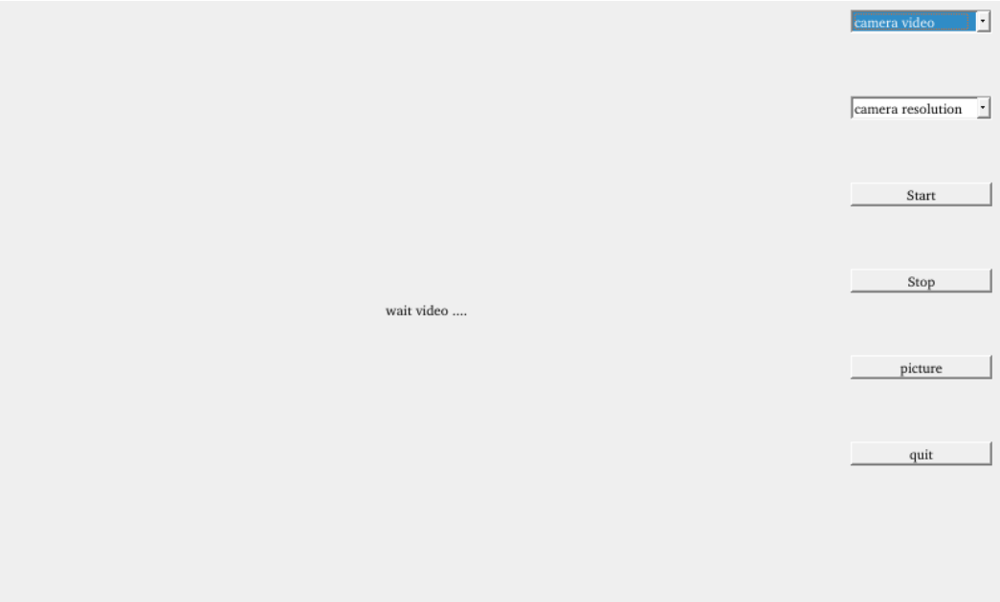
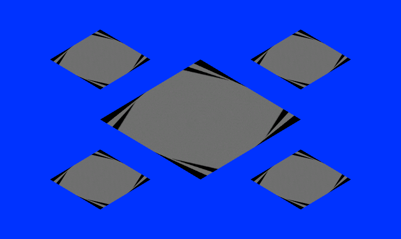

Linux4.9.170_User’s Manual_V1.3
Document classification: □ Top secret □ Secret □ Internal information ■ Open
Copyright
The copyright of this manual belongs to Baoding Folinx Embedded Technology Co., Ltd. Without the written permission of our company, no organizations or individuals have the right to copy, distribute, or reproduce any part of this manual in any form, and violators will be held legally responsible.
Forlinx adheres to copyrights of all graphics and texts used in all publications in original or license-free forms.
The drivers and utilities used for the components are subject to the copyrights of the respective manufacturers. The license conditions of the respective manufacturer are to be adhered to. Related license expenses for the operating system and applications should be calculated/declared separately by the related party or its representatives.
Application Scope
This software manual is applicable to theOKT507-C platform Linux4.9.170 operating system of Forlinx.
Revision History
Date |
User Manual Version |
SoM Version |
Carrier Board Version |
Revision History |
|---|---|---|---|---|
05/06/2024 |
V1.0 |
V1.0 |
V1.1/V2.1 |
SDK2.0 User’s Manual Initial Version. |
19/06/2024 |
V1.1 |
V1.0 |
V1.1/V2.1 |
1. Replacing some pictures in the manual; 2. Correcting the layout of the manual. |
04/01/2025 |
V1.2 |
V1.0 |
V1.1/V2.1/V3.1 |
1. Adding support for rotation, scaling, and offset in video playback, as well as video playback on a specified screen in dual-screen display; 2. Adding support for audio chip NAU88C22. |
06/08/2025 |
V1.3 |
V1.0 |
V2.1/V3.1 |
Adding TP2855MIPI to 4 analog camera module adapter. |
Overview
This manual is designed to help you quickly familiarize yourselves with the product, and understand the interface functions and testing methods. It primarily covers the testing of interface functions on the development board, the methods for flashing images, and troubleshooting procedures for common issues encountered in use. In the process of testing, some commands are annotated to facilitate the your understanding, mainly for practical use. Please refer to “OKT507-C_Linux4.9.170+Qt5.12 User’s Compilation Manual” provided by Forlinx for kernel compilation, related application compilation methods and development environment construction.
There are total six parts:
Chapter 1. provides an overview of the product, briefly introducing the interface resources of the development board, the relevant driver paths in the kernel source code, supported flashing and booting methods, as well as explanations of key sections in the documentation;
Chapter 2. is the fast boot/startup of the product, which can adopt two ways of serial port login and network login;
Chapter 3. is QT interface function test of the product;
Chapter 4. is the command line operation of the product for functional testing;
Chapter 5. is the multimedia test of the product, including the playback test of the camera and the video hardware codec test;
Chapter 6. is the image update of the product, which mainly describes the method of updating the image to the storage device. Users can choose the corresponding flashing mode according to the actual situation.
1. OKT507 Development Board Description
The OKT507-C development board adopts SoM+carrier board structure. It is designed and developed based on Allwinner T507 quad-core automotive-grade processor, Cortex with Cortex-A53 architecture, running at a frequency of 1.5GHz. It integrates a G31 GPU, 2GB DDR3L memory, and 8GB eMMC storage. The OKT507-C development board provides a rich set of functional interfaces, including dual Ethernet, CPU-integrated audio codec, IIS external audio codec, ADC, TF Card, LVDS, RGB, HDMI, WIFI, Bluetooth, 4G, MIPI_CSI, DVP_CSI, and other interfaces. It also reserves interfaces for installing 4-channel AHD camera to MIPI_CSI module, and optional modules designed by Forlinx, facilitating the development and verification of AHD camera functions.

Note: The software manual no longer includes hardware parameter details. Prior to software development, please read the “OKT507-C_Hardware User’s Manual” located at “Hardware Information\User Manual” path. This manual clarifies product naming conventions and specific hardware configuration. It aids in understanding and utilizing the product effectively.
1.1 Linux 4.9.170 Software Resources
Device |
Location of driver source code in the kernel |
Device Name |
|---|---|---|
NIC Driver |
drivers/net/ethernet/allwinner/ |
/sys/class/net/eth* |
LCD Backlight Driver |
drivers/video/fbdev/sunxi/disp2/disp |
|
HDMI Driver |
drivers/video/fbdev/sunxi/disp2/hdmi2/ |
/dev/fb1 |
LED Driver |
drivers/leds/leds-gpio.c |
/sys/class/leds/ |
USB Port |
drivers/usb/storage/ |
/dev/sdx |
USB 4G |
drivers/usb/serial/ |
/dev/ttyUSB* |
USB Camera |
drivers/media/usb/uvc/uvc_video.c |
|
SD Driver |
drivers/mmc/card/ |
/dev/block/mmcblk0pX |
LCD FrameBuffer |
drivers/video/fbdev/sunxi/disp2/disp/lcd |
/dev/fb0 |
serial port driver |
drivers/tty/serial/sunxi-uart.c |
/dev/tty* |
watchdog driver |
drivers/watchdog/sunxi_wdt.c |
/dev/watchdog |
WIFI |
drivers/net/wireless/ |
wlan0 |
Bluetooth driver |
drivers/bluetooth/ |
|
Audio Driver |
sound/soc/sunxi |
/dev/snd/ |
SPI Controller |
drivers/spi/spi-sunxi.c |
|
TWI Driver |
drivers/i2c/busses/i2c-sunxi.c |
|
PWM Driver |
drivers/pwm/pwm-sunxi.c |
|
OV5640_DVP |
drivers/media/platform/sunxi-vin/modules/sensor/ov5640.c |
/dev/video* |
OV5640_MIPI |
drivers/media/platform/sunxi-vin/modules/sensor/ov5640_mipi.c |
/dev/video* |
TP2854M |
drivers/media/platform/sunxi-vin/modules/sensor/tp2854_mipi.c |
/dev/video* |
TP2855 |
drivers/media/platform/sunxi-vin/modules/sensor/tp2815_mipi.c |
/dev/video* |
GT911 Touch Driver |
drivers/input/touchscreen/gt911.c |
/dev/input/event* |
GT928 Touch Driver |
drivers/input/touchscreen/gt928.c |
/dev/input/event* |
TSC2007 Touch Driver |
drivers/input/touchscreen/tsc2007.c |
/dev/input/event* |
GPADC driver |
drivers/input/sensor/sunxi_gpadc.c |
/dev/input/event* |
LRADC key driver |
drivers/input/keyboard/sunxi-keyboard.c |
/dev/input/event* |
RTC Driver |
drivers/rtc/rtc-rx8010.c |
/dev/rtc0 |
IR Driver |
drivers/media/rc/sunxi-ir-dev.c |
/dev/input/event* |
Description: The driver tp2815 adapts both the TP2855 MIPI to 4 analog camera module and the TP2855 MIPI to 4 analog camera module.
1.2 Flashing and Booth Configuration
The OKT507 board is equipped with a BOOT DIP switch, which supports system flashing via TF card and USB OTG, and boot modes of eMMC and TF. The DIP switch is used to distinguish between these modes (The position of the DIP switch for eMMC boot is shown in the figure below). For the specific flashing operation process, please refer to the section “System Flashing”.
DIP Switch |
1 |
2 |
3 |
4 |
|---|---|---|---|---|
TF Card Flashing |
OFF |
OFF |
OFF |
OFF |
USB OTG Flashing |
ON |
OFF |
OFF |
ON |
eMMC Boot |
ON |
OFF |
OFF |
ON |
Note: The T507 development board does not support SPI NOR booting.
2. Fast Startup
2.1 Preparation Before Startup
The OKT507 development board has two system login methods, serial and network login.
Hardware preparation before system startup:
12V3A DC power cable
Debugging serial cable (Serial Login)
The debug serial port on the development board is equipped with a DB9 male connector. You can use either a null modem cable or a USB to RS232 serial cable to connect the development board to a PC. This allows them to view the status information of the development board.
Network cable (Network login)
Screen: Connect the screen according to the development board interface (optional if display is not needed).
Check the start mode dip switch
Please check the DIP switch on your development board and make sure it is set to the desired boot mode. Please refer to “1.3 Flashing and Boot Configuration” for the startup mode settings.
2.2 Serial Login Method
2.2.1 Serial Port Login
Description:
Serial port settings: Baud rate 115200, 8 data bits, 1 stop bit, no parity bit, no flow control;
Serial terminal login as root user, no password, login without account;
Software: Windows PC requires Super Terminal; choose a familiar serial terminal software.
Here is an example using Putty to explain how to configure the terminal:
Step 1: Connect the development board and the PC using a serial cable, and verify the serial port number recognized by the computer through the “Device Manager”. The port number recognized by the computer should be considered as the accurate one;

Step 2: Open and set up putty, then set the“ line according to the COM port of the computer used, baud rate 115200;
Step 3: When you power on the development board, print information will display on the serial port until “root@forlinx~/$” appears, indicating startup completion. The system defaults to the root account without a password, eliminating the need for login credentials.
2.2.2 Serial Login Common Problems
If the computer port does not have a serial port, you can connect it to the development board using a USB to serial converter cable. To use the USB to serial converter cable, you need to install the corresponding driver program.
It is better to use a good quality cable to avoid error codes.
2.3 Network Login Methods
2.3.1 Network Connection Test
Description:
The default factory IP for eth0 is 192.168.0.232, and eth1 has not been configured;
The computer and board should be on the same network segment for testing.
Before logging into the network, ensure that the direct network connection between the computer and the development board is functioning properly. You can test the connection status via pin command. The specific method is as follows:
1. Connect the development board’s eth0 interface to the computer using an Ethernet cable. Power on the board and boot the kernel. Confirm the blue heartbeat LED is blinking. Check the network card connection, ensuring its LED flashes rapidly. Once confirmed, proceed with testing the network connection;

2. Close the computer firewall (General computer operations, not described here in detail), then open the computer’s run command;

3. Use cmd to open the administrator interface , and the ping command to test the network connection status of the computer and the development board.

A data return indicates a normal network connection.
2.3.2 SSH server
Description:
The default factory SSH login account is “root” and the password is also “root”;
The default factory IP for eth0 is 192.168.0.232;
File transfers can be performed with scp.
Click “Open”, the following dialog box will appear, click “Yes” to enter the login screen.

Login as：root
root@192.168.0.232's password: //Enter development board account no. root and password root as prompted
root@forlinx~/root$
You can use WinSCP (software needs to be installed separately) to copy files
2.4 Screen Switching
Description:
By default, the system is set to dual-screen asynchronous display with HDMI and LCD (resolution 1024x600). The HDMI screen displays the logo, while the LCD screen displays the QT main interface;
Screen switching control supports two methods: specified by the kernel device tree and dynamically controlled via the U-Boot menu. Additionally, there is a QT interface UbootMenu application.
OKT507 comes with a default setting of dual-screen asynchronous display, with the logo being displayed on the HDMI screen.

The LCD displays the main interface:

OKT507 supports multiple screen interfaces, such as RGB and HDMI. It can achieve both mirrored (same content on both screens) and extended (different content on each screen) display modes simultaneously. Additionally, HDMI interface can be flexibly assigned to support 4K output. Currently, there are three methods for screen switching control: specified by the kernel device tree, dynamically controlled via the U-Boot menu, and through the QT interface UbootMenu application.
At present OKT507-C supports HDMI, LVDS 1280x800, LCD7 1024x600, LCD7 800x480 capacitor, LCD7 800x480 resistance screen.
2.4.1 Kernel Device Tree Specification
The device tree path is: linux-4.9/arch/arm64/boot/dts/sunxi/OKT507-C-Common.dtsi
This method can set the system default screen display to the desired way without connecting the serial terminal selection, which is suitable for mass production. However, you need to manually modify the device tree and regenerate the system image once again This method has higher priority than the U-boot menu dynamica control.
In the kernel source code, open the device dtsi file and find the following node:

Parameter Description:
Meaning |
|
|---|---|
status |
Describe the node state: disabled is for off, okay is for on |
disp_lcd_type |
Describe the LCD interface type |
disp_hdmi_type |
Describe the HDMI screen resolution |
disp_camera_type |
Describe Camera MIP |
disp_mode |
Describe the display type: 1 represents single-display LCD, 2 represents single-display HDMI, 3 represents asynchronous display, and 4 represents synchronous display. |
Where the disp _ lcd type (describing the type of LCD interface) represents the following:
Parameter |
Meaning |
|---|---|
4 |
7＂ 800x480 resistive touch screen |
3 |
7＂ 800x480 capacitive touch screen |
2 |
7＂ 1024x600 capacitive touch screen |
1 |
10.1＂ 1280x800 capacitive touch screen |
Examples:
Configured in synchronous display mode, the main screen is a capacitive screen with a resolution of 1280x800, and the secondary screen is an HDMI interface screen with a resolution of 4096x2160P50.

Change the setup parameters according to the actual needs, and after saving, please recompile to generate the image.
2.4.2 Dynamic Control of Uboot Menu
This method allows switching without recompiling and burn-in of existing supported screens.
2.4.2.2 Screen Switching Method
Here is the explanation for switching to a single screen display with LVDS 1280x800 as an example:
During the U-Boot auto-start process, if you press the space key on the serial terminal, you will enter the U-Boot menu interface.

Select 2 to enter the LCD Screen Control submenu
Select 1 as shown in the figure above to enter the LCD configuration submenu

Select 1 to set to LVDS 1280x800, and then select 0 to return to the previous menu

Select 5 to enter the display mode parameter configuration menu.
Based on the image above, select option 5 to enter the Display Mode Configuration submenu.
Select 1, set up LCD single display, then select 0 to return to the previous menu.
After making the selection, press the reset key to restart the device ( Alternatively, you can follow the menu prompts to return to the first-level U-Boot menu and select “reboot” to restart the device). The changes you made will take effect after the device restarts.
2.5 Resistor Screen Recalibration
When using a resistive touch screen, it is necessary to calibrate using tslib by default. If recalibration is needed, please execute:
root@forlinx~/$ /usr/bin/ts_calibrate
The calibration file is saved in the/etc/pointercal
2.6 System Partition
The following table is the eMMC memory partition information of Linux operating system:
Partition Index |
Name |
Size/MB |
File System |
Content |
|---|---|---|---|---|
mmcblk0p1 |
Loader |
32 |
FAT32 |
boot-resource.fex |
mmcblk0p2 |
Env |
16 |
RAW |
env.fex |
mmcblk0p3 |
boot |
64 |
RAW |
boot.fex |
mmcblk0p4 |
rootfs |
7040 |
Ext4 |
rootfs.fex |
The command “df” is used to check the disk usage on a system. When used with the flag “-m”, it displays the file system disk space usage in megabytes (MB). The following image depicts the default disk usage upon factory settings (using the QT file system). Please note that this is for reference only, and actual parameters may vary.

Using the free command to check memory usage. The following image illustrates the memory usage without any external devices connected. Please note that this is for reference only, and actual parameters may vary.
2.7 System Shutdown
In general, you can turn off the power directly, but avoid doing so during important operations like data storage or usage to prevent irreversible file damage. Damaged files may require firmware rewrite. To ensure that data is not completely written, enter the sync command to complete data synchronization before turning off the power.
The command “reboot” can be used to restart the development board. You can also restart the device by pressing K8 (RESET) or power cycling it.
Note: If the user-designed product using the SoM experiences an unexpected shutdown due to power loss during operation, power-down protection measures can be included in the design to prevent this issue.
3. OKT507 Platform Interface Function Use and Test
Description:
Please follow this section when using the screen with the QT file system, but can skip it for non-QT operations;
This chapter focuses on describing the functionalities in Qt. It is assumed that the default device is connected properly and the drivers are loaded correctly during testing. It is recommended to test the command line functionalities before testing the interface functionalities;
QT test programme source code path: source code (OKT507-linux-sdk20)/platform/framework/auto/fltest_qt_demo;
Testing program path in the development board’s file system: /usr/bin.
This chapter mainly explains the usage of the expansion interfaces on the development board in QT interface. The testing program is only for reference, and users need to make adjustments based on their actual situations when using it.
3.1 Interface Function Introduction
The desktop is displayed as follows after the development board is booted:


3.2 Audio and Video Playback Experience
Icon：
Click on the audio and video playback icon to enter the video player, which allows you to play both music and videos. The default sound is output from Line Out (optional output interface), and Line Out can be connected to headphones or speakers.
Click on the video player icon on the left side to enter the video player interface, then click on the search button. Choose either “/forlinx/media/1080p_60fps_h264.mp4” or “/forlinx/media/1080p_60fps_h265.mp4” to perform a playback test.

Click the audio player icon on the right side
 Represents using LINEOUT to play music.Represents using HeadPhone to play music.
Represents using LINEOUT to play music.Represents using HeadPhone to play music.
 Playing music using HDMI.
Playing music using HDMI.
3.3 OpenGL Test
Icon：
OKT507 supports up to OpenGL ESv3.2. Please click on the OpenGL icon to perform the test.
Click on “File” in the top left corner and select “Exit” and return to the main interface.
3.4 Network Configuration Test
Description:
The default factory setting is to configure only the eth0 network interface in STATIC mode, while the eth1 network interface is not configured;
The IP and network configuration will be stored in the system file (/etc/network/interfaces), ensuring the settings persist across system restarts.
Icon：
Clicking on the network configuration icon will open a interface program that supports two modes: STATIC and DHCP.
STATIC mode
After clicking on the network configuration icon, select the STATIC mode as shown in the figure. You can then configure the IP address, subnet mask, gateway, and DNS settings. Once you have set the parameters, click on “Apply and Restart Network”.
Relevant Parameter |
Meaning |
|---|---|
interface |
Set the network card |
getmask |
Set the subnet mask |
gateway |
Set the gateway |
dns |
Set the DNS |

DHCP mode
Note: Testing must be done on a router that supports automatic IP allocation.
Check DHCP, select the NIC device needing to be configured, and click “Apply and Restart Network” at the bottom of the interface to restart the network and get the ip automatically.
3.5 Browser Test
Icon：
Click the browser icon and ensure a smooth network connection with available DNS before accessing external sites. Upon browser startup, it defaults to visiting Forlinx Embedded’s official website, as shown below:
Note: If the development board time is abnormal, it will cause certificate problems.
3.6 4G Test
Icon：
The “4G” test program is used to test the OKT507 external 4G module (ME909S and EC20). Before testing, power off the development board, insert the SIM card into the 4G module (ensure correct SIM direction), and launch the test application. This test employs the EC20 module as a reference.

Click the CONNECT button then the program will automatically enter the dialing process and get the IP to set the DNS, etc. After waiting patiently for a few seconds, click the ping button to test it.
3.7 UART Test
Icon：
This test uses UART5 (ttyS5) to perform serial port test by sending and receiving data between the development board’s UART and the computer’s serial port tool software.
1. After connecting the development board and the computer via a TTL to USB module, power on the development board. Check in the computer’s device manager, it should be recognized as COM4 (please adjust the settings according to the actual COM port recognized);
2. Open the computer serial port tool, set the serial port parameters: baud rate 115200, 8 data bits, 1 stop bit, no parity, no flow control, and open the serial port;
3. Click the UART test icon to enter the following interface to set the serial port parameters:

Click the setup button in the upper left corner to set the serial port parameters to be consistent with the parameters of the serial port tool on the computer side, as shown below:
to set the serial port parameters to be consistent with the parameters of the serial port tool on the computer side, as shown below:
Relevant Parameter |
Meaning |
|---|---|
Select Serial Port |
Set the serial port (select UART5, i.e. ttyS5) |
BaudRate |
Set the baud rate (115200) |
Data bits |
Set the data bit (8 bits) |
Parity |
Set the parity bit (no parity) |
Stop bits |
Set the stop bit (1 bit) |
Flow control |
Set the flow control (no flow control) |

After setting the serial port parameters, click the connect button in the upper left corner , then the program can conduct data sending and receiving tests.
, then the program can conduct data sending and receiving tests.
4. The serial port tool of the computer sends: “forlinx_uart_test.1234567890…”; the test interface will receive the data:
Click the test interface to pop up the soft keyboard, enter “abcdefg”, press Enter on the soft keyboard to send data to the serial port tool on the computer side:

The data received by the serial port tool on the computer side:

3.8 ADC Test
Icon：
On the carrier board of OKT507-C, GPADC, 3 channels are connected to a variable resistor. The resistance value of the variable resistor changes correspondingly. Max value of 4096 corresponds to a voltage of 1.8V. Click the ADC test icon to test GPADC 3-channel by adjusting the variable resistor.

3.9 WIFI Test
Icon：
“WIFI” is a tool for configuring and testing the STA (station) mode of Wi-Fi.
Click on the icon to enter the test interface. From the dropdown menu, select the corresponding module. In the SSID, input the name of the router you want to connect. In the PAWD, input the router’s password. Then, click “connect” to establish a WiFi connection with the router.
2. After the connection is successful, click “ping” to test the network after setting the IP.

3.10 RTC Test
Note: Ensure button cell batteries are installed & voltage is normal.
Icon：
RTC test includes setting time, power cycling, rerunning test software, and verifying RTC sync.
Run the RTC test software to view and set the current system time with the following interface:

After SET, you can set the time and click Save to finish the settings. After powering off and waiting, reboot and rerun the RTC test software to synchronize and confirm the RTC test is normal.
3.11 Key Test
Icon：
“Keypad” tests platform buttons’ availability by checking if pressed buttons turn blue. Interface shown below.

The OKT507 platform has five physical buttons: VOL-, VOL+, MENU, ENTER, and HOME, which correspond to V-, V+, Home, Menu, and Enter respectively. When a button is pressed, the corresponding button in the testing application will turn blue, indicating that the button function is working properly.
Note: Currently, this application only reports the key value when a key is pressed.
3.12 Watchdog Test
Icon：
“WatchDog” tests the functionality of the watchdog feature. Interface as follows:
Checking “feed dog” & clicking “open watchdog” starts watchdog function with dog-feeding. System shouldn’t restart under normal conditions.
Unchecking “Feed Dog” & clicking “Activate Watchdog” starts watchdog function without dog-feeding. After about 10 seconds, the system restarts, indicating normal watchdog function.”
3.13 Ping Test
Icon：
“Ping” is a graphical tool for network testing, offering a user-friendly interface for ping operations.
In the hostname, enter the target IP address you wish to ping. After clicking the “Ping” button, the results will appear in the “result”. A successful ping will indicate smooth network connectivity, as shown in the figure. Click “Stop” to stop the ping test, and “Clear” to remove information from the “result”.
3.14 Camera Test
Icon：
Click the icon to enter the camera test program. The test program is compatible with MIPI and DVP interfaces. .

Choose the camera video device node;
Set the camera resolution;
Click “Start” to capture video;
Click “Stop” to end capture;
Click “Picture” to take a photo;
Save the photo with a name and at a chosen path.
Note: Please select the camera device and resolution based on your actual situation.
Take ov5640_mipi camera as an example for test.
Click “Picture” to take photos and save them in /root/. Use Windows built-in image viewer to view them.

3.15 Backlight Test
Icon：
“BackLight” is an LCD backlight adjustment App with a left-right progress bar for brightness control. Click to open the interface as follows:

Drag the slider in the interface to set the LCD backlight brightness, 0 level for weak backlight, 255 (150 level) for maximum brightness.
3.16 Recording Test
Icon：
Before conducting the audio recording test, please insert the prepared microphone into the mic port. Click the icon to enter the recording test application, which can be used to check if the sound card recording function is working properly.
Please choose the location to save the recording file. The “Start” button is used to begin recording, while the “Stop” button is used to stop it. The interface is as follows:
3.17 CPU Frequency Configuration Test
OKT507 CPU frequency is up to 1.5 GHz. By default, the CPU will dynamically adjust the main frequency according to the load or fix the CPU main frequency by settings.
Click the desktop setting icon to enter the next menu:
enter the next menu:

Click the desktop icon to enter the CPU main frequency setting page:
to enter the CPU main frequency setting page:
Set OnDemand Governor：Dynamically adjust the main frequency on demand.
Set Userspace Governor: Set the clock in user mode
Set Frequency: Set the core main frequency
Take the setting of main core frequency as an example: first click “Set Userspace Governor” “, select “run” in the pop-up dialog box, and then click “Set Frequency” to set the fixed frequency. (Click the arrow in the top right corner to return to the previous directory, and click the icon in the top right corner to return to the main directory).

Select the desired frequency for configuration based on the needs.
3.18 SQLite3 Database Test
Icon：
Click on the icon to access the database testing interface.
Select the column that needs to be modified, and click on an empty area after making the changes.

3.19 UBOOT Menu Configuration Test
Click theicon to enter the UBOOT menu configuration test interface.
In the UBOOT menu configuration test program, you can configure parameters such as LCD screen resolution, HDMI resolution, camera device, display mode, etc.
LCD screen configuration interface is as follows:
HDMI configuration interface is as follows:

Camera configuration interface is as follows: You can choose to use the OV5640 MIPI camera or the TP2854M 4-in-1 MIPI analog camera.

The display mode configuration interface is as follows: The four options respectively represent: Single Display LCD, Single Display HDMI, Dual Display, and Clone Display.

After the configuration is completed, exit the program, and then restart the development board, and the settings will take effect.
Note: After setting the “forlinx_control” node to “okay” in the device tree file linux-4.9/arch/arm64/boot/dts/sunxi/OKT507-C-Common.dtsi, applying configurations using the UbootMenu is ineffective.
4. OKT507 Command Line Function Test
OKT507 platform comes with a rich set of command-line tools for users to utilize.
The source code for the test program can be found at: User/profile/linux/source_code (OKT507-linux-sdk/platform/framework/auto/fltest_cmd_demo)
Testing program path: “path”: /usr/bin
4.1 System Information Query
View kernel and CPU information and enter the following commands:
root@forlinx~/$ uname -a
Linux t507 4.9.170 #2 SMP PREEMPT Thu Aug 12 02:42:48 UTC 2021 aarch64 GNU/Linux
View operating system information:
root@forlinx~/$ cat /proc/cpuinfo
View environment variable information:
root@forlinx~/$ env
4.2 Frequency Test
Note: This process takes cpu0 as an example, and the actual process of cpu1, cpu2, and cpu3 will be changed at the same time.
1. All cpufreq governor types supported in the current kernel:
root@forlinx~/$ cat /sys/devices/system/cpu/cpu0/cpufreq/scaling_available_governors
interactive conservative ondemand userspace powersave performance schedutil
The userspace indicates user mode, in which other users’ programs can adjust the CPU frequency.
To view the frequency gear supported by the current CPU
root@forlinx~/$ cat /sys/devices/system/cpu/cpu0/cpufreq/scaling_available_frequencies
480000 600000 792000 1008000 1200000 1512000
3. Set to user mode and modify the frequency to 480000:
root@forlinx~/$ echo userspace > /sys/devices/system/cpu/cpu0/cpufreq/scaling_governor
root@forlinx~/$ echo 480000 > /sys/devices/system/cpu/cpu0/cpufreq/scaling_setspeed
View the modified current frequency:
root@forlinx~/$ cat /sys/devices/system/cpu/cpu0/cpufreq/cpuinfo_cur_freq
480000
4.3 Temperature Test
View the temperature value:
root@forlinx~/$ cat /sys/class/thermal/thermal_zone0/temp
67049
The temperature value is 67°C.
4.4 DDR Bandwidth Test
root@forlinx~/$ memory_bandwidth.sh
Printing information is as follows:

The DDR3 bandwidth of the OKT507-C, as shown in the above figure, is approximately 1480 MB/s for read bandwidth and around 1000 MB/s for read-write bandwidth.
4.5 Watchdog Test
Watchdog is a function often used in embedded systems. The device node of watchdog in OKT507 is /dev/watchdog. This test provides two test procedures, and the user selects one test according to the actual situation.
Start the watchdog, set the reset time to 10s, and kick the dog regularly.
If usingfltest_watchdog, it turns on the watchdog and kick it, so the system does not reboot.
root@forlinx~/$ fltest_watchdog
Watchdog Ticking Away!
When using ctrl+c to end the test program, kicking the dog is stopped, the watchdog is on, and the system is reset after 10s.
If you do not want to reset, enter the shutdown watchdog command within 10s after finishing the program:
root@forlinx~/$ fltest_watchdog –d //Turn off the watchdog
Start watchdog, set reset time 10s, do not kick the watchdog.
Execute the command fltest_watchdogrestart, this command will turn on the watchdog but will not kick the watchdog and the system will reboot after 10s.
root@forlinx~/$ fltest_watchdogrestart
4.6 RTC Function Test
Note: Ensure button cell batteries are installed & voltage is normal.
RTC test: The main way to set the software and hardware time is by using the date and hwclock utilities. When performing the board power-down and power-up test, the software clock reads whether the RTC clock is synchronized or not.
root@forlinx~/$ date -u 072216162021.00 //Set the software time
Thu Jul 22 16:16:00 UTC 2021
root@forlinx~/$ hwclock -w //Synchronize software time to hardware time
root@forlinx~/$ hwclock -r //Display the hardware time
Thu Jul 22 16:16:14 2021 0.000000 seconds
Then power down and power up the board, enter the system, and read the system time. After that, we can see that the time has synchronized.
root@forlinx~/$ date
Thu Jul 22 16:16:30 UTC 2021
4.7 Key Test
Use the fltest_keytest command line tool to test the keystrokes. fltest_keytest currently supports five keys on the carrier board, VOL+, VOL-, MENU, ENTER, and HOME, with keycodes 115, 114, 139, 28, and 172, respectively.
Execute the following command:
root@forlinx~/$ fltest_keytest
At this point, press the lift button in sequence, and the following can be output on the terminal:
key115 Presse // VOL+press
key115 Released // VOL+release
key114 Presse // VOL-press
key114 Released // VOL-release
key139 Presse // MENU press
key139 Released // MENU release
key28 Presse // ENTER press
key28 Released // ENTER release
key172 Presse // HOME press
key172 Released // HOME release
4.8 UART Test
OKT507-C development board is equipped with 3 UART ports, which are labeled on the board as follows:
UART |
Device Node |
Description |
|---|---|---|
UART0 |
/dev/ttyS0 |
Debugging serial port cannot be used directly for this test. |
UART1 |
/dev/ttyS1 |
It is used for Bluetooth and is not separately pinned out and can’t be directly used for this test. |
UART5 |
/dev/ttyS5 |
TTL level, pinned-out from P28, can be used for test. |
This test uses UART5 (ttyS5) to perform serial port test by sending and receiving data between the development board’s UART and the computer’s serial port tool software.

1. After connecting the development board and the computer via a TTL to USB module, power on the development board. Check in the computer’s device manager, it should be recognized as COM4 (please adjust the settings according to the actual COM port recognized);

2. Open the computer serial port tool, set the serial port parameters: baud rate 115200, 8 data bits, 1 stop bit, no parity, no flow control, and open the serial port;

Enter the following command into the serial port of the development board (the test program has a fixed baud rate of 115200):
root@forlinx~/$ fltest_uarttest -d /dev/ttyS5
Printing information is as follows:
Welcome to uart test
Send test data:
forlinx_uart_test.1234567890... //Send data
The test program automatically se”forlinx_uart_test.1234567890…”. The message is received when the serial aide is viewed:

PC serial tool sends “forlinx_uart_test.1234567890…”. At this point, the development board receives the message and the related printout is as follows:
Welcome to uart test
Send test data:
forlinx_uart_test.1234567890...
Read Test Data finished,Read:
forlinx_uart_test.1234567890... //Receive data
4.9 GPADC Test
The development board offers 4 x GPADC (General Purpose Analog-to-Digital Converter). The voltage sampling range is from 0 to 1.8V. You can test the values of adjustable resistors:
root@forlinx~/$ fltest_adc
4.10 TF Card Test
Description:
The SD card mounts at /run/media, allowing hot-plugging. Terminal displays SD card information.
1. Insert the TF card into the card slot on the carrier board. Under normal circumstances, the development board terminal will display the following printing information:
root@forlinx~/$ [ 4421.918947] sunxi-mmc sdc0: sdc set ios:clk 0Hz bm PP pm UP vdd
[ 4421.929301] sunxi-mmc sdc0: no vqmmc,Check if there is regulator
[ 4421.952271] sunxi-mmc sdc0: sdc set ios:clk 400000Hz bm PP pm ON vdd 22 width
[ 4421.978977] sunxi-mmc sdc0: sdc set ios:clk 400000Hz bm PP pm ON vdd 22 width
[ 4421.992246] sunxi-mmc sdc0: sdc set ios:clk 400000Hz bm PP pm ON vdd 22 width
[ 4422.005058] sunxi-mmc sdc0: sdc set ios:clk 400000Hz bm PP pm ON vdd 22 width
[ 4422.018410] sunxi-mmc sdc0: sdc set ios:clk 400000Hz bm PP pm ON vdd 22 width
[ 4422.180865] sunxi-mmc sdc0: sdc set ios:clk 0Hz bm PP pm ON vdd 22 width 1 ti
[ 4422.191179] sunxi-mmc sdc0: no vqmmc,Check if there is regulator
[ 4422.212274] sunxi-mmc sdc0: sdc set ios:clk 400000Hz bm PP pm ON vdd 22 width
[ 4422.232564] mmc1: host does not support reading read-only switch, assuming wr
[ 4422.242331] sunxi-mmc sdc0: sdc set ios:clk 400000Hz bm PP pm ON vdd 22 width
[ 4422.258770] sunxi-mmc sdc0: sdc set ios:clk 400000Hz bm PP pm ON vdd 22 width
[ 4422.269377] sunxi-mmc sdc0: sdc set ios:clk 150000000Hz bm PP pm ON vdd 22 wi
[ 4422.280261] mmc1: new ultra high speed SDR104 SDHC card at address e624
[ 4422.288449] mmcblk1: mmc1:e624 SL16G 14.8 GiB
[ 4422.299543] mmcblk1: p1
2. Check the mount directory:
root@forlinx~/$ ls /run/media //List files in the/run/media directory
mmcblk0p1 mmcblk1p1
3. Write test:
root@forlinx~/$ dd if=/dev/zero of=/run/media/mmcblk1p1/test bs=1M count=500 conv=fsync
500+0 records in
500+0 records out
524288000 bytes (524 MB, 500 MiB) copied, 28.8519 s, 18.2 MB/s
4. Read test:
Note: To ensure the accuracy of the data, please restart the development board to test the reading speed.
root@forlinx~/$ dd if=/run/media/mmcblk1p1/test of=/dev/null bs=1M
[ 27.383663] random: crng init done
500+0 records in
500+0 records out
524288000 bytes (524 MB, 500 MiB) copied, 7.89095 s, 66.4 MB/s
5. After using the TF card, uninstall it with umount before ejecting it.
root@forlinx~/$ umount /run/media/mmcblk1p1
Note: Plug and unplug the TF card after exiting the TF card mounting path.
4.11 EMMC Test
The OKT507 platform eMMC runs in HS400 mode 100MHz clock by default. The following is a simple eMMC read/write speed test: taking the read/write ext4 file system as an example.
Write test:
root@forlinx~/$ dd if=/dev/zero of=/test bs=1M count=500 conv=fsync
500+0 records in
500+0 records out
524288000 bytes (524 MB, 500 MiB) copied, 25.2707 s, 20.7 MB/s
Read test：
Note: To ensure the accuracy of the data, please restart the development board to test the reading speed.
root@forlinx~/$ dd if=/test of=/dev/null bs=1M
500+0 records in
500+0 records out
524288000 bytes (524 MB, 500 MiB) copied, 3.15513 s, 166 MB/s
4.12 USB Mouse Test
When a USB mouse is connected to the USB interface of the OKT507 platform, the printout information from the serial terminal is as follows:
root@forlinx~/$ [ 175.241765] sunxi-ehci 5311000.ehci3-controller: ehci_irq: highspeed device connect
[ 175.354671] sunxi-ehci 5311000.ehci3-controller: ehci_irq: highspeed device disconnect
[ 175.681225] usb 6-1: new low-speed USB device number 2 using sunxi-ohci
[ 175.858790] input: USB OPTICAL MOUSE as /devices/platform/soc/5311000.ohci3-controller/usb6/6-1/6-1:1.0/0003:2188:0AE1.0001/input/input8
[ 175.873287] hid-generic 0003:2188:0AE1.0001: input,hidraw0: USB HID v1.11 Mouse [USB OPTICAL MOUSE ] on usb-sunxi-ohci-1/input0
At this time, the arrow cursor appears on the screen, the mouse can work normally.
When the USB mouse is disconnected, the printout in the serial terminal is as follows:
root@forlinx~/$ [ 897.305810] usb 6-1: USB disconnect, device number 4
evdevmouse: Could not read from input device (No such device)
The arrow cursor on the screen disappears and the mouse is successfully removed.
4.13 USB 2.0
OKT507 supports 2 x USB 2.0 interfaces. Users can connect USB mouse, keyboards, drives, and other devices to any on-board USB host interface, with support for hot-swapping these devices. Here, demonstrate using mounting a USB flash drive as an example. Currently, the USB flash drive has been tested to support up to 32GB; capacities exceeding 32GB have not been tested.
The terminal will display USB flash drive information, which may vary due to the different types available.
1. Upon booting the development board, plug a USB flash drive into its USB host interface.
Serial port information:
root@forlinx~/$ [ 1463.598431] sunxi-ehci 5311000.ehci3-controller: ehci_irq: highspeed device connect
[ 1463.827617] usb 3-1: new high-speed USB device number 6 using sunxi-ehci
[ 1463.977375] usb-storage 3-1:1.0: USB Mass Storage device detected
[ 1463.984721] scsi host0: usb-storage 3-1:1.0
[ 1465.009615] scsi 0:0:0:0: Direct-Access Generic MassStorageClass 1536 PQ: 0 ANSI: 6
[ 1465.322727] sd 0:0:0:0: [sda] 31116288 512-byte logical blocks: (15.9 GB/14.8 GiB)
[ 1465.332619] sd 0:0:0:0: [sda] Write Protect is off
[ 1465.338052] sd 0:0:0:0: [sda] Mode Sense: 21 00 00 00
[ 1465.345094] sd 0:0:0:0: [sda] Write cache: disabled, read cache: enabled, doesn't support DPO or FUA
[ 1465.369092] sda: sda1
[ 1465.376363] sd 0:0:0:0: [sda] Attached SCSI removable disk
2. Check the mount directory:
root@forlinx~/$ ls /run/media/
mmcblk0p1 sda1
“sda1” represents the first partition of the first USB storage device inserted, and so forth.
3. View the contents of the USB flash drive:
root@forlinx~/$ ls -l /run/media/sda1
total 8
drwxrwx--- 2 root disk 8192 Sep 23 2021 'System Volume Information'
-rwxrwx--- 1 root disk 0 Apr 25 09:25 test
4. Write test: Write speeds are limited by the specific storage device:
root@forlinx~/$ dd if=/dev/zero of=/run/media/sda1/test bs=1M count=500 conv=fsync
500+0 records in
500+0 records out
524288000 bytes (524 MB, 500 MiB) copied, 89.5725 s, 5.9 MB/s
5. Read test:
Note: To ensure the accuracy of the data, please restart the development board to test the reading speed.
root@forlinx~/$ dd if=/run/media/sda1/test of=/dev/null bs=1M
500+0 records in
500+0 records out
524288000 bytes (524 MB, 500 MiB) copied, 15.7525 s, 33.3 MB/s
6. After using a USB flash drive, before removing the USB flash drive, you need to use the “umount” command to unmount it.
root@forlinx~/$ umount /run/media/sda1
Note: Exit the USB flash drive mount path before plugging and unplugging the USB flash drive.
4.14 OTG Test
OKT507-C board includes an OTG (On-The-Go) interface. In Device mode, it can be used for activities such as firmware flashing, ADB file transfer, and debugging. In Host mode, it allows you to connect regular USB devices to the board. When connecting the OKT507-C to a PC using a Micro USB cable, the OKT507-C will automatically configure the OTG interface as Device mode. Similarly, when connecting a USB flash drive or other devices using an OTG cable, the system will automatically configure the OTG interface as Host mode.
Device Mode:
Host Mode:
4.15 Ethernet Configuration
OKT507-C board has a Gigabit Ethernet port and a hundred-megabit Ethernet port. When connected via Ethernet cable, the Gigabit Ethernet port is factory-configured with a static IP of 192.168.0.232. The OKT507-C’s network card can be configured via the configuration file /etc/network/interfaces.
4.15.1 Gigabit Ethernet Static IP Configuration
Note: In the kernel, the Gigabit Ethernet card is identified as eth0, and its default IP address is 192.168.0.232.
After booting the development board, execute the following command to open the network configuration file/etc/network/interfaces
root@forlinx~/$ vi /etc/network/interfaces
Content as follows (slight differences may occur after software version updates; users should refer to actual information):
iface：Used to specify a network card that requires a fixed IP;
address: Used to specify an IP address that needs to be fixed;
netmask: Used to set the subnet mask;
gateway: Used to specify a gateway;

To ensure the configuration changes take effect, users need to adjust settings as needed, save and exit, synchronize using “sync,” and then either restart the development board or use “ifdown -a” followed by “ifup -a” commands to restart the configuration.
4.15.2 Gigabit Ethernet Static IP Configuration
Note: The Gigabit Ethernet card in the kernel is eth1, which is not configured by default.
Please refer to”4.15.1 Gigabit Ethernet Fixed IP Method”for the setting method. Take setting the ip of eth1 as 192.168.1.232 as an example, the configuration file after modification is as follows:
After users adjust settings according to their needs, save and exit, sync using “sync,” and then either restart the development board or use “ifdown eth1” followed by “ifup eth1” commands to restart the configuration, the configuration file will take effect.
4.15.3 Automatic IP Acquisition Methods
After booting the development board, execute the following command to open the network configuration file/etc/network/interfaces
root@forlinx~/$ vi /etc/network/interfaces
Remove the address, netmask, and gateway attributes and modify them as follows:
auto eth0
iface eth0 inet dhcp
auto eth1
iface eth1 inet dhcp
The modified configuration file is as follows:

After saving and exiting, use sync to synchronize and reboot the board for the configuration file to take effect.
4.15.4 Ethernet Speed Test
Description:
In this test, an Ubuntu virtual machine is used as the test server, with the IP address 192.168.0.233.
By default, the Ubuntu virtual machine is already installed with the iperf3 tool for this test.
Test the OKT507-C carrier board eth0/eth1 network speed by using the network speed test tool iperf3. View the IP address 192.168.0.233 via the ifconfig command in the Ubuntu virtual

Ubuntu virtual machines run in server mode:
forlinx@ubuntu:~$ sudo iperf3 –s

1. eth0 Gigabit Ethernet port speed test;
Default factory eth0 ip is 192.168.0.232, in the OKT507 serial debugging terminal enter
root@forlinx~/$ iperf3 -c 192.168.0.233 -t 60 -i 1 //Please fill in the server IP address according to the actual situation
OKT507-C Gigabit network transmission bandwidth of 811Mb/s
2. eth1 100 Mbps network port speed test.
Close eth0, set the IP of eth1 to 192.168.0.232, and enter the following in the OKT507 serial port debugging terminal:
root@forlinx~/$ iperf3 -c 192.168.0.233 -t 60 -i 1 //Please fill in the server IP address according to the actual situation
The bandwidth of OKT507-C for 100Mbps network transmission is 95Mb/s.
4.16 Network Services
Description:
The default IP for eth0 is 192.168.0.232
4.16.1 Web Services
Note: To properly use this feature, the PC’s IP address must be in the same network segment as the development board’s.
The OKT507 development board comes with the lighttpd web server pre-installed, and the lighttpd service has been automatically started at system startup. Enter the IP address of the board into the PC browser to view the web pages in the board’s webserver, as shown in the following figure:
4.16.2 SFTP
Installation Package Path: OKT507-C (Linux20) User Profile Tool\FileZilla*
The OKT507-C development board supports SFTP service, and it is automatically enabled during system startup. Once the IP address is set, it can function as an SFTP server. The following describes how to utilize the SFTP tool for file transfer.
Install FileZilla tool on Windows and follow the steps shown in the image below to set it up.
Open the filezilla tool, click on File and select Site Manager.


After successful login, you can upload and download.
4.17 WIFI Test
4.17.1 STA Mode
Description:
The network environment is different, so please set it according to the actual situation when you do this experiment.
This mode is used as a station to connect to the wireless network. In the following test, the router uses WPA encryption, the connected wifi hotspot name is: H3C_708_5G and the password is: 123456785. Due to the different network environments, users should set up according to the actual situation when conducting this test:
1. Enter the following command in the development board terminal:
root@forlinx~/$ fltest_wifi.sh -i wlan0 -s H3C_708_5G -p 123456785.
The meanings of the related parameters in the command are as follows:
Parameter |
Meaning |
|---|---|
-i |
Wifi device name：wlan0 |
-s |
Actual wifi hotspot connected |
-p |
-p：followed by the parameter Password refers to the password of the actual wifi hotspot to be connected. If the current hotspot does not have a password, the parameter after -p is NONE. |
The serial port prints as follows:
wifi wlan0
ssid H3C_708_5G
pasw 123456785.
[ 4466.451151] start_addr=(0x8000), end_addr=(0x10000), buffer_size=(0x8000), smp_number_max=(4096)
wpa connect status:SCANNING
wpa connect status:SCANNING
wpa connect status:SCANNING
wpa connect status:SCANNING
wpa connect status:ASSOCIATING
[ 4470.729419] IPv6: ADDRCONF(NETDEV_CHANGE): wlan0: link becomes ready
connect ok
udhcpc: started, v1.29.3
udhcpc: sending discover
udhcpc: sending select for 192.168.1.14
udhcpc: lease of 192.168.1.14 obtained, lease time 86400
deleting routers
adding dns 192.168.1.1
2. Check whether it can ping the external network and enter the following command in the terminal:
root@forlinx~/$ ping -I wlan0 www.baidu.com -c 3 //Assign the wlan0 NIC to ping 3 times
PING www.baidu.com (220.181.38.150): 56 data bytes
64 bytes from 220.181.38.150: seq=0 ttl=50 time=21.087 ms
64 bytes from 220.181.38.150: seq=1 ttl=50 time=34.342 ms
64 bytes from 220.181.38.150: seq=2 ttl=50 time=14.291 ms
--- www.baidu.com ping statistics ---
3 packets transmitted, 3 packets received, 0% packet loss
round-trip min/avg/max = 14.291/23.240/34.342 ms
4.17.2 AP Mode
Description:
Ensure that the Gigabit LAN card is eth0 connected to the network and that the network works well before performing this test;
1. View the drive loading status, taking 8821 module as an example;
root@forlinx~/$ lsmod
Module Size Used by Tainted: G
8821cs 3198976 0
mali_kbase 528384 3
No 8821cs need to be loaded manually
root@forlinx~/$ insmod /lib/modules/4.9.170/8821cs.ko
2. Configure Hotspot;
WiFi Hotspot Name: wifi_test
Password: 12345678
The hotspot name and password can be viewed through the /etc/hostapd.conf file.
root@forlinx~/$ fltest_hostapd.sh
Starting dnsmasq: Configuration file: /etc/hostapd.conf
OK
root@forlinx:/# Using interface wlan0 with hwaddr b8:4d:43:09:b3:b6 and ssid "wifi_test"
wlan0: interface state UNINITIALIZED->ENABLED
wlan0: AP-ENABLED
4.18 Bluetooth Test
The 8821CS of the OKT507 development board carrier board has integrated Bluetooth. This section demonstrates the use of Bluetooth for file transfer between the phone and the development board.
1. The WIFI node needs to be turned on, otherwise the connection will fail:
root@forlinx~/$ ifconfig wlan0 up
2. Bluetooth Configuration
root@forlinx~/$ bluetoothctl //Open the bluez Bluetooth tool
Agent registered
[bluetooth]# power on //Start the Bluetooth device
[bluetooth]# [ 4375.679671] rtk_btcoex: Open BTCOEX
[ 4375.961599] Bluetooth: hu ffffffc0789af000 retransmitting 1 pkts
[ 4375.970426] rtk_btcoex: BTCOEX hci_rev 0xaa99
[ 4375.975374] rtk_btcoex: BTCOEX lmp_subver 0x821a
[CHG] Controller 30:95:87:A4:19:39 Class: 0x00100000
Changing power on succeeded
[CHG] Controller 30:95:87:A4:19:39 Powered: yes
[bluetooth]# pairable on //Set to pairing mode
Changing pairable on succeeded
[bluetooth]# discoverable on //Set to discoverable mode
[bluetooth]# [ 4401.054954] Bluetooth: hu ffffffc0789af000 retransmitting 1 pkts
Changing discoverable on succeeded
[CHG] Controller 30:95:87:A4:19:39 Discoverable: yes
[bluetooth]# agent on //Start the agent
Agent is already registered
[bluetooth]# default-agent //Set the current agent as the default
Default agent request successful
[bluetooth]# [ 4588.201588] Bluetooth: hu ffffffc0789af000 retransmitting 1 pkts
[CHG] Controller 30:95:87:A4:19:39 Discoverable: no
3. Development Board Passive Pairing.
After the above settings, open the mobile phone Bluetooth search, a “BlueZ 5.50” device will appear, click this Bluetooth to try to pair.

At the same time the printing message displays on the development board as follows, enter yes
[NEW] Device C4:E1:A1:BA:A4:9E OPPO Reno Ace
[OPPO Reno Ace]# [ 574.119213] rtk_btcoex: io capability request
Request confirmation
[agent] Confirm passkey 609166 (yes/no): yes
Then, tap on Bluetooth on your phone to initiate pairing.
View and remove connected devices:
[bluetooth]# devices //View connected Bluetooth device
Device C4:E1:A1:BA:A4:9E OPPO Reno Ace
[bluetooth]# remove C4:E1:A1:BA:A4:9E //Remove the device
4. Development board active pairing
In addition to passive pairing, it is also possible to send an active pairing request from the development board terminal
[bluetooth]# scan on //Search for discoverable Bluetooth
[bluetooth]# [ 4082.935317] Bluetooth: hu ffffffc079071400 retransmitting 1 pkts
[ 4082.945319] rtk_btcoex: hci (periodic)inq start
Discovery started
[CHG] Controller 30:95:87:A4:19:39 Discovering: yes
[NEW] Device 8C:5A:F8:E7:76:0B 8C-5A-F8-E7-76-0B
[NEW] Device 58:85:A2:D0:1A:6C wjy
[NEW] Device C4:E1:A1:BA:A4:9E OPPO Reno Ace
[CHG] Device C4:E1:A1:BA:A4:9E RSSI: -72
[CHG] Device C4:E1:A1:BA:A4:9E RSSI: -60
[bluetooth]# scan off //Stop searching
[bluetooth]# pair C4:E1:A1:BA:A4:9E //Pair the bluetooth
Attempting to pair with C4:E1:A1:BA:A4:9E
[bluetooth]# [ 4160.081893] Bluetooth: hu ffffffc079071400 retransmitting 1 pkts
[ 4160.090162] rtk_btcoex: hci create connection, start paging
[ 4160.927552] rtk_btcoex: connected, handle 0007, status 0x00
[ 4160.933879] rtk_btcoex: Page success
[ 4160.969754] rtk_btcoex: io capability request
[CHG] Device C4:E1:A1:BA:A4:9E Connected: yes
Request confirmation
[agent] Confirm passkey 206621 (yes/no): yes //Password confirmation
At the same time, a pairing request will appear on the phone interface. Tap on it to accept the pairing. On the board side, enter ‘yes’ and it will be paired with the phone.
5. Development board to receive documents
After successful pairing, on the mobile side, you can use Bluetooth to send files to OKT507-C.
Received files are saved in the /root directory.
6. The development board to send files
Similarly, the OKT507-C can send files to a cell phone, test is as follows:
root@forlinx~/$ fltest_obexctl.sh //Start fltest_obexctl.sh
[NEW] Client /org/bluez/obex
[obex]# connect C4:E1:A1:BA:A4:9E //Connect to the Bluetooth MAC that needs to communicate
…… . Non-critical information is omitted here
[NEW] Session /org/bluez/obex/client/session0 [default]
[NEW] ObjectPush /org/bluez/obex/client/session0
Connection successful
[C4:E1:A1:BA:A4:9E]# send /forlinx/media/test.mp3 //Send file
The phone will receive the incoming file request, click Accept to transfer the file.
4.19 4G Test
Description:
The driver supports 4G modules of Huawei ME909 and Mobile EC20.
OKT507 supports a 4G module. Before starting the development board, connect the 4G module, install the 4G antenna, insert the SIM card, and then start the development board. The following provides separate dial-up internet access instructions for ME909 and EC20.
4.19.1 EC20 Module Test
Description:
When the IOT card is used for testing, confirm the firmware version of the module. If the lower version firmware is not supported, upgrade the EC20 firmware;
Some IoT cards require a dedicated account number and password when dialing, and users adjust the commands according to the situation;
Use the quectel-CM –help command to see what the parameters mean.
1. After connecting the module and powering up the board and module, check the USB status through the lsusb command.
root@forlinx~/$ lsusb
Bus 005 Device 001: ID 1d6b:0001
Bus 003 Device 001: ID 1d6b:0002
Bus 002 Device 002: ID 2c7c:0125 //EC20 VID and PID
Bus 001 Device 001: ID 1d6b:0002
Bus 006 Device 001: ID 1d6b:0001
Bus 004 Device 001: ID 1d6b:0001
Bus 002 Device 001: ID 1d6b:0002
View device node status under /dev
root@forlinx~/$ ls /dev/ttyUSB*
/dev/ttyUSB0 /dev/ttyUSB1 /dev/ttyUSB2 /dev/ttyUSB3
2. After the equipment is successfully identified, the dial-up Internet access test can be conducted. ec20.sh calls quectelCM, see /usr/bin/ec20 for the specific command
root@forlinx~/$ fltest_ec20.sh &
Printing information is as follows:
[10-14_10:28:06:667] Quectel_QConnectManager_Linux_V1.6.0.15
[10-14_10:28:06:668] Find /sys/bus/usb/devices/2-1 idVendor=0x2c7c idProduct=0x1 25, bus=0x002, dev=0x002
[10-14_10:28:06:668] Auto find qmichannel = /dev/cdc-wdm0
[10-14_10:28:06:668] Auto find usbnet_adapter = wwan0
[10-14_10:28:06:669] netcard driver = qmi_wwan_q, driver version = 22-Aug-2005
[10-14_10:28:06:669] ioctl(0x89f3, qmap_settings) failed: Operation not supporte d, rc=-1
[10-14_10:28:06:669] Modem works in QMI mode
[10-14_10:28:06:680] cdc_wdm_fd = 7
[10-14_10:28:06:772] Get clientWDS = 18
[10-14_10:28:06:803] Get clientDMS = 1
[10-14_10:28:06:835] Get clientNAS = 3
[10-14_10:28:06:867] Get clientUIM = 1
[10-14_10:28:06:899] Get clientWDA = 1
[10-14_10:28:06:931] requestBaseBandVersion EC20CEHCR06A02M1G //The version number in the print information is 3Mxx, which does not support the Internet of Things card, and only 5Mxx supports it.
[10-14_10:28:07:059] requestGetSIMStatus SIMStatus: SIM_READY
[10-14_10:28:07:091] requestGetProfile[1] 3gnet///0
[10-14_10:28:07:123] requestRegistrationState2 MCC: 460, MNC: 1, PS: Attached, D ataCap: LTE
[10-14_10:28:07:155] requestQueryDataCall IPv4ConnectionStatus: DISCONNECTED
[10-14_10:28:07:155] ifconfig wwan0 0.0.0.0
[10-14_10:28:07:163] ifconfig wwan0 down
[10-14_10:28:07:219] requestSetupDataCall WdsConnectionIPv4Handle: 0x86ac9e70
[10-14_10:28:07:347] ifconfig wwan0 up
[10-14_10:28:07:356] udhcpc -f -n -q -t 5 -i wwan0
udhcpc: started, v1.29.3
udhcpc: sending discover
udhcpc: sending select for 10.203.238.118
udhcpc: lease of 10.203.238.118 obtained, lease time 7200
[10-14_10:28:07:528] deleting routers
[10-14_10:28:07:556] adding dns 202.99.160.68
[10-14_10:28:07:556] adding dns 202.99.166.4
If it can automatically allocate an IP and add DNS, then the EC20 dial-up is successful.
3. After successfully dialing, use the ifconfig command to check the network interface, which is typically named wwan0 (the interface name may vary depending on the actual situation). Then, test the network status using the ping command.
root@forlinx~/$ ping -I wwan0 www.forlinx.com
PING www.forlinx.com (211.149.226.120): 56 data bytes
64 bytes from 211.149.226.120: seq=0 ttl=51 time=64.882 ms
64 bytes from 211.149.226.120: seq=1 ttl=51 time=64.636 ms
64 bytes from 211.149.226.120: seq=2 ttl=51 time=63.331 ms
^C /Use [Ctil + C] here to end the ping proces
--- www.forlinx.com ping statistics ---
3 packets transmitted, 3 packets received, 0% packet loss
round-trip min/avg/max = 63.331/64.283/64.882 ms
4.20 Play/Record Test
OKT507 offers four 3.5mm audio jacks and two XH-2.54mm speaker connectors. The LINE IN and LINE OUT interfaces are derived from the CPU’s built-in codec. The MIC and HeadPhone and speaker jacks are led from an external codec on the carrier board. The carrier board uses the WM8960 audio chip, which supports left and right channels to play sound and MIC recording. WM8960 chip has a built-in Class D amplifier, and the Speaker interface can drive an 8Ω speaker with a maximum output power of 1W. If you need to connect a larger amplifier, you can only obtain the signal from the headphone jack, and not from the speaker interface. The on-chip headphone driver has an output power of 40mW（16Ω).
Before conducting the audio playback test, please insert the prepared headphones into the earpiece interface or connect the speaker to the corresponding slot on the carrier board. Then, use the command “fltest_audioplayer” to initiate the test. Press the spacebar to pause or resume audio playback, press the up arrow key to switch the sink, press the down arrow key to pause playback, press the left arrow key to rewind by 4 seconds, and press the right arrow key to fast-forward by 4 seconds.
4.20.1 HDMI Audio Playback
root@forlinx~/$ fltest_audioplayer /forlinx/media/test.mp3 -d hdmi //Play the audio file test.mp3
======================================
|Space key | start or pause |
|Down key | stop |
|Left key | seek backend |
|Right key | seek forward |
|Up key | audio sink |
======================================
[ 181.217985] sunxi->update_param:1
[ 181.221791] HDMI Audio Enable Successfully
[ 182.452504] raw_flag value is 0
/forlinx/media/test.mp3 total ms:300016
[mp3 @ 0x40e7690] Could not update timestamps for skipped samples.
4.20.2 LINEOUT Audio Playback
root@forlinx~/$ fltest_audioplayer /forlinx/media/test.mp3 -d codec //播放音频文件test.mp3
======================================
|Space key | start or pause |
|Down key | stop |
|Left key | seek backend |
|Right key | seek forward |
|Up key | audio sink |
======================================
/forlinx/media/test.mp3 total ms:300016
[mp3 @ 0x294e9690] Could not update timestamps for skipped samples
Simply plug the headphones into the LINEOUT interface, and you will be able to hear the sound.
4.20.3 HeadPhone Audio Playback
Before performing the playback test, please plug the prepared 3.5mm headphones into the HeadPhone jack. To play sound using speakers, plug the prepared speaker SPK_RP, SPKL_N pin cables into the P32 or P31 connector.
root@forlinx~/$ fltest_audioplayer /forlinx/media/test.mp3 -d wm8960
======================================
|Space key | start or pause |
|Down key | stop |
|Left key | seek backend |
|Right key | seek forward |
|Up key | audio sink |
======================================
[ 403.682008] raw_flag value is 0
/forlinx/media/test.mp3 total ms:300016
[mp3 @ 0x2aab7690] Could not update timestamps for skipped samples.
4.20.4 MIC Recording Test
Before conducting the recording test, please plug the prepared microphone into the mic socket
1. Modify the gain when recording, otherwise the recording will have bottom noise.
WM8960 audio chip.
root@forlinx:/# amixer cset name='Left Input Boost Mixer LINPUT1 Volume' 0,0 -c 3
root@forlinx:/# amixer cset name='Right Input Boost Mixer RINPUT1 Volume' 0,0 -c 3
NAU88C22 audio chip.
root@forlinx:/# amixer cset name='PGA Volume' 0,0 -c 3
2. Recording instructions are as follows:
root@forlinx~/$ tinycap_ahub mic.wav -aD 1 -ad 1 -D 3 -d 0 -t 30 -b 16 -c 2 -p 1024
tinycap save : mic.wav
[ 653.147728] raw_flag value is 0
Capturing sample: 2 ch, 44100 hz, 16 bit, malloc buffer:16384
^CCapture finish : Captured 655360 frames //End the process here with [Ctil + C]
You can start recording by pressing Ctrl + C to stop the recording, press Ctrl + C again. Once the recording is stopped, you can find the generated audio file “mic.wav” in the current directory.
4.20.5 Volume Adjustment
The lineout volume settings (default sound output from lineout) are led by the CPU’s built-in codec.
It can be set up using amixer:
root@forlinx~/$ amixer sset 'LINEOUT volume' 20
Or use tinymix to set it:
root@forlinx~/$ tinymix -D 0 4 20 //Set LINEOUT volume to 20
WM8960 sets the volume for microphone recording and the playback volume for headphones and speakers connected to the audio chip.
mic recording volume:
It can be set up using amixer:
root@forlinx~/$ amixer cset name='Capture Volume' 50,50 -c 3
Or use tinymix to set it:
root@forlinx~/$ tinymix -D 3 0 50 50
Headphone playback volume:
It can be set up using amixer:
root@forlinx~/$ amixer sset Headphone 101,101 -c 3
Or use tinymix to set it:
root@forlinx~/$ tinymix -D 3 10 110 110
Speaker playback volume:
It can be set up using amixer:
root@forlinx~/$ amixer sset Speaker Playback Volume 110,110 -c 3
Or use tinymix to set it:
root@forlinx~/$ tinymix -D 3 12 127 127
NAU88C22 sets the volume for microphone recording and the playback volume for headphones and speakers connected to the audio chip.
mic recording volume:
It can be set up using amixer:
root@forlinx:/# amixer cset name='ADC Volume' 220,220 -c 3
Or use tinymix to set it:
root@forlinx:/# tinymix -D 3 9 220 220
Headphone playback volume:
It can be set up using amixer:
root@forlinx:/# amixer sset Headphone 40,40 -c 3
Or use tinymix to set it:
root@forlinx:/# tinymix -D 3 29 40 40
Speaker playback volume:
It can be set up using amixer:
root@forlinx:/# amixer sset Speaker Playback Volume 40,40 -c 3
Or use tinymix to set it:
root@forlinx:/# tinymix -D 3 32 40 40
4.21 LCD Backlight Adjustment
Backlight level range (0–255), maximum level 255, 0 indicating turn off. Enter the system and enter the following command in the terminal to perform the backlight test.
1. View the current screen backlight value:
root@forlinx~/$ fltest_backlight get
get current brightness 150 //The current backlight value is 150
2. Backlight is off:
root@forlinx~/$ fltest_backlight set 0
set brightness 0,ret 0 //Turn off the backlight
3. LCD backlight is on:
root@forlinx~/$ fltest_backlight set 125
set brightness 125,ret 0 //The current backlight value is 150
root@forlinx~/$ fltest_backlight get
get current brightness 125 //Backlight modification succeeded
4.22 Closing the Desktop
root@forlinx~/$ /etc/init.d/S60Matrix_Browser stop //关闭桌面
root@forlinx~/$ fbinit 0 //清屏操作
cleanning /dev/fb0 ...
clean /dev/fb0 finish
root@forlinx~/$ fbinit 1
cleanning /dev/fb1 ...
clean /dev/fb1 finish
root@forlinx~/$ fbinit 2
cleanning /dev/fb2 ...
clean /dev/fb2 finish
4.23 Video Playback
During testing, please first close the desktop testing program and perform a screen clearing operation. Refer to the section “4.22 Closing the Desktop”.
4.23.1 Video Playback with a Dedicated Graphics Card
1. Directly execute xplayerdemo to play the default video;
root@forlinx:/# xplayerdemo
2. Play the dedicated video;
Just write the video source as the next parameter after executing the application to play the video.
root@forlinx:/# xplayerdemo /forlinx/media/1080p_30fps_h265.mp4
3. Video scaling and offset;
root@forlinx:/# xplayerdemo /forlinx/media/1080p_30fps_h265.mp4 -s 1 -w 800 -h 480 -x 50 -y 50
-s 1 indicates enabling the scaling and offset settings.
-w, -h, -x, and -y represent the width, height, x - direction offset of the initial display position, and y - direction offset of the initial display position of the video respectively.

4. Switch audio output;
root@forlinx:/# xplayerdemo /forlinx/media/1080p_30fps_h265.mp4 -a 1
-a 1 means selecting HDMI as the audio output, while -a 0 or the default setting is the carrier board audio output;
5. Video Rotation
In the Linux system, to rotate the desktop, modify the /etc/env.sh file by changing the boot environment variables. The changes will take effect after a restart. Play a video to test the rotation effect.
root@forlinx:/# vi /etc/profile.d/env.sh
Note: QT_QPA_EGLFS_ROTATION = 90 means rotating the desktop 90 degrees clockwise. You can set the actual rotation degree according to your needs. MEDIA_FOLLOWS_QT_ROTATION = 1 indicates that the video will rotate following the rotation angle of QT.

4.23.2 Video Playback with a Dual-screen Display
root@forlinx:/# xplayerdemo /forlinx/media/1080p_30fps_h265.mp4 -d 2 -s 1 -w 800 -h 480 -x 50 -y 50 -W 1000 -H 800 -X 150 -Y 150
-d: Specifies the display device. 0 represents LCD, 1 represents HDMI, and 2 represents dual - screen display.
w, h, x, and y are the offset parameters for the LCD respectively.
W, H, X, and Y are the offset parameters for the HDMI respectively.
root@forlinx:/# xplayerdemo /forlinx/media/1080p_30fps_h265.mp4 -d 0 -s 1 -w 600 -h 440 -x 100 -y 100
root@forlinx:/# xplayerdemo /forlinx/media/1080p_30fps_h265.mp4 -d 1 -s 1 -W 600 -H 400 -X 150 -Y 150

4.24 IR Test
OKT507-C board has a soldered infrared probe. The kernel is configured with NEC protocol by default, which allows testing with remote controllers that support the NEC protocol, such as the one shown in the image below.
The testing method is as follows:
root@forlinx~/$ evtest
Choose 7 sunxi-ir

When a button on the remote controller is pressed, a corresponding key value will be reported.

4.25 LED Test
The OKT507-C SoM has a controllable blue LED light. When the board is powered on, the blue LED light will blink. If the user wants to disable this feature, they would need to modify the device tree file in the source code: kernel/linux-4.9/arch/arm64/boot/dts/sunxi/OKT507-C-Common.dtsi. They should change the “state = “on”” attribute of the “leds” node to “off”, and change “linux,trigger=”heartbeat”” to “none”.
The testing method is as follows:
1. To view trigger conditions:
root@forlinx~/$ cat /sys/class/leds/heartbeat/trigger
none rc-feedback rfkill0 mmc0 mmc1 mmc2 timer oneshot mtd nand-disk [heartbeat] backlight gpio cpu0 cpu1 cpu2 cpu3 default-on
Where [heartbeat] indicates that the current trigger condition is the system heartbeat light. Write the above string in trigger to modify the trigger condition.
2. User Control
When the led trigger condition is set to gpio, the user can control the led light on or off by commands
root@forlinx~/$ echo gpio > /sys/class/leds/heartbeat/trigger //Set the trigger condition to gpio
root@forlinx~/$ echo 1 > /sys/class/leds/heartbeat/brightness //Turn on the LED
root@forlinx~/$ echo 0 > /sys/class/leds/heartbeat/brightness //Turn off the LED
3. Change the blue LED to a heartbeat light
root@forlinx~/$ echo heartbeat > /sys/class/leds/heartbeat/trigger //Set the trigger condition to heartbeat
At this time, the LED has a system clock control, blinking according to a certain rhythm.
4.26 SQLite3 Test
SQLite3 is a lightweight database management system that adheres to ACID principles, making it a resource-efficient relational database management system. The OKT507-C development board is ported with version 3.25.3 of sqlit3.
root@forlinx~/$ sqlite3
SQLite version 3.25.3 2018-11-05 20:37:38
Enter ".help" for usage hints.
Connected to a transient in-memory database.
Use ".open FILENAME" to reopen on a persistent database.
sqlite> create table tbl1 (one varchar(10), two smallint); // Create table tbl1
sqlite> insert into tbl1 values('hello!',10); // Insert data 'hello!|10' into table tbl1
sqlite> insert into tbl1 values('goodbye', 20); // Insert data 'goodbye|20' into table tbl1
sqlite> select * from tbl1; // Query the contents of table tbl1
hello!|10
goodbye|20
sqlite> delete from tbl1 where one = 'hello!'; // Delete data
sqlite> select * from tbl1; // Query the contents of table tbl1
goodbye|20
sqlite> .quit // Exit the database (or use the .exit command)
root@forlinx~/$
4.27 Adding Autostart Scripts
4.27.1 Temporarily Adding Autostart Scripts
1. Create a shell script first:
root@forlinx~/$ vi /usr/bin/while.sh
Modify the file reference as follows (users need to modify according to the actual situation):
2. After modification, save and exit, and add execution permission to the script
root@forlinx~/$ chmod +x /usr/bin/while.sh
3. Add at the end of the /etc/init.d/rcS file
/usr/bin/while.sh &
Save and Exit
4.27.2 Adding Autostart Scripts to the Flashed Image
Add a startup script during image flashing, you need to modify the source code in the development environment. Here are the steps to follow:
1. Enter the OKT507-linux-sdk20 source code package and create a shell script in the following directory: OKT507-linux-sdk20/platform/framework/auto/rootfs/usr/bin;
The format is as follows for reference, and users can modify it according to their actual needs:
2. Use thechmod +x while.sh command to add execute permissions to a file;
3. Add the newly created shell script to the OKT507 root filesystem rcS file;
The rcS file is in the source package path: OKT507-linux-sdk20/platform/framework/auto/rootfs/etc/init.d/rcS
Add a shell statement to the end of the rcS file : /usr/bin/while.sh & .
4. Recompile and package.
Please refer to the compilation chapter of “OKT507-C_Qt5.12+linux4.9.170 User’s Compilation Manual_V1.0” without further discussion.
4.28 A53 CoreMark Test
The most well-known and commonly used Benchmarks in the field of embedded processors are Dhrystone and CoreMark. CoreMark is a comprehensive benchmark that is used to measure the performance of the central processing unit (CPU) employed in embedded systems. It was developed by shay gal-on of eembc in 2009, aiming to become an industry standard and replace the outdated dehrystone benchmark.
The OKT507-C platform has the CoreMark test program ported by default, and you can use the following commands to test it:
1. Set the CPU to high performance mode
root@forlinx~/$ echo performance > /sys/devices/system/cpu/cpu0/cpufreq/scaling_governor
2. CoreMark test
root@forlinx~/$ coremark.exe
Printing information is as follows:

OKT507-C coremark performance score 4900
4.29 A53 Dhrystone Test
Dhrystone is a comprehensive benchmark program designed by Reinhold P. Weicker in 1984, used to test CPU (integer) computing performance. Dhrystone does not include floating-point operations, and its output is the number of times Dhrystone is run per second, which corresponds to the number of iterations of the main loop per second.
The Dhrystone testing program has been successfully ported to the OKT507-C platform. You can use the following command to run the test.
1. Set the CPU to high performance mode
root@forlinx~/$ echo performance > /sys/devices/system/cpu/cpu0/cpufreq/scaling_governor
2. Dhrystone test
root@forlinx~/$ echo 50000000 | dhrystone //Run the dhrystone test 50000000 times
Printing information is as follows:
Dhrystone test result:
The OKT507-C A53 processor has a MIPS speed of 4917.
4.30 OpenGL Test
Note:
Before performing the tests in this section, refer to “4.22 Closing the Desktop” to close the desktop test program and clear the screen;
The current version does not support HDMI display in different display mode.
OKT507 supports OpenGL. When testing OpenGL, you need to enter the following command in the command line to enter the test program.
root@forlinx~/$ fltest_malitest
The test interface is shown in the figure below:

After the test, press ctrl + c to exit the test program.
Configure the single display mode, and the corresponding screen displays the above picture. Configure the simultaneous display mode, and the LCD/HDMI displays the above picture.
4.31 On-board DEMO Test
Note: The current version only supports LCD display, and does not yet support taking photos. Additionally, the only supported exit signals are SIGINT and SIGQUIT.
OKT507 features a car UI interface DEMO. To test this DEMO, you need to enter the following command in the command line to access the testing program.
root@forlinx~/$ fltest_qt_cameraui
The test interface is shown in the figure below:

Click on “Start Preview” in the top left corner of the interface to display the camera preview screen, as shown in the image above. Click on theicon to switch between the cameras used for preview display.
After the test, press ctrl + c to exit the test program.
5. OK507 Platform Multimedia Test
The audio and video part of the OKT507 platform supports hardware codecs. All of the examples in this section are based on command line forms. If users need a player with an interface, they can also use qt’s multimedia classes, which also support codecs, see the Qt Tests chapter.
The OKT507 platform has an internal video processing unit, the VPU, which supports hardware codecs for video in the following formats:
Video Decoding: H264, H265, maximum support 4K@60fps
Video Encoding: H264, maximum support 4K@25fps
Table of hardware decoder parameters for the OKT507 platform:
Video Decoder |
Format |
Resolution |
Frame rate |
|---|---|---|---|
H.265 |
4K |
60 fps |
|
AVS2 |
4K |
60 fps |
|
VP9 |
4K |
60fps |
|
Video Encoder |
H.264 |
4K |
25 fps |
5.1 OV5640_MIPI Playback Test
Note:
Before performing the tests in this section, refer to “4.22 Closing the Desktop” to close the desktop test program and clear the screen;
When using V4L2 for video capture, the video buffer needs to be allocated based on 16-byte alignment according to the width and height. After dequeuing the buffer using DQBUF, the excess data needs to be cropped;
H264 encoding is calculated on 16-byte alignment.
OKT507 current OV5640_MIPI supports resolutions of 640x480, 1280x720, 1920x1080, 2594x1944 respectively. The camera recognizes the device node as /dev/video2, and this test uses HDMI as the display device.
Acquisition Test
root@forlinx~/$ csi_test_display -f video2 -o 1 //Turn on the device node to be displayed by HDMI

Parameter Description:

Parameter |
Meaning |
|---|---|
-f |
Specify video device node |
-o |
Specify display device |
-w |
Set the capture resolution width. |
-h |
Set the capture resolution height. |
-s |
Scale the image using -x -y -W -H together |
-c |
Crop the image using -X -Y -W -H together |
-L |
Layer selection, 0 ~ 3 |
-C |
Chanel selection, 0 ~ 3 |
-Z |
Image display priority, high priority can overlay low priority. |
E |
Extended functions: 1. Take photos. 2. Capture for H.264 encoding |
-? |
Print Command Parameter Description |
Change Capture Resolution Test
root@forlinx~/$ csi_test_display -f video2 -o 1 -w 1920 -h 1080
Camera test
root@forlinx~/$ csi_test_display -f video2 -o 1 -w 1920 -h 1080 -E 1
Terminal printing information is as follows:

When the above printing is displayed, press the Enter key to take a photo. The printing information is as follows:

When the above printing is displayed, press Enter to continue taking photos, and press Ctrl+C to exit.
The images are saved in the current directory with the filename ‘video_sgl_HH_MM_SS.jpg’, where ‘HH’ represents the current hour, ‘MM’ represents the current minute, and ‘SS’ represents the current second. You can use the built-in Windows photo viewer to directly open the images.
H.264 encoding test
root@forlinx~/$ csi_test_display -f video2 -o 1 -w 1920 -h 1080 -E 2
Press enter; terminal printing information is as follows:

When the display is printed as above, press the Enter key at this time to start coding and the printing information is as follows:

Press enter again to end the code:

When the above printing information is displayed, press Enter to continue coding, and press Ctrl+C to exit.
Save the encoded file to the current directory with the filename “video_encode_HH_MM_SS.h264,” where “HH” represents the current hour, “MM” represents the current minute, and “SS” represents the current second. You can play it using the Windows VLC software.
Press enter again to end the coding:
root@forlinx~/$ csi_test_display -f video2 -s 1 -x 0 -y 0 -W 640 -H 480 -o 1
5.2 OV5640_DVP Playback Test
Note:
Before performing the tests in this section, refer to “4.22 Closing the Desktop” to close the desktop test program and clear the screen;
When using V4L2 for video capture, the video buffer needs to be allocated based on 16-byte alignment according to the width and height. After dequeuing the buffer using DQBUF, the excess data needs to be cropped;
H264 encoding is calculated on 16-byte alignment;
Run csi_test_display directly, which defaults to using the video0 device, capturing at a resolution of 1280x720, and displaying on the LCD screen.
OKT507 current OV5640_dvp supports resolutions of 640x480, 1280x720, 1920x1080, 2594x1944 respectively. The camera recognizes the device node as /dev/video3, and this test uses HDMI as the display device.
Acquisition Test
root@forlinx~/$ csi_test_display -f video3 -o 1 //Turn on the device node to be displayed by HDMI

Parameter Description:
Parameter |
Meaning |
|---|---|
-f |
Specify video device node |
-o |
Specify display device |
-w |
Set the capture resolution width. |
-h |
Set the capture resolution height. |
-s |
Scale the image using -x -y -W -H together |
-c |
Crop the image using -X -Y -W -H together |
-L |
Layer selection, 0 ~ 3 |
-C |
Chanel selection, 0 ~ 3 |
-Z |
Image display priority, high priority can overlay low priority. |
E |
Extended functions: 1. Take photos. 2. Capture for H.264 encoding |
-? |
Print Command Parameter Description |
Change Capture Resolution Test
root@forlinx~/$ csi_test_display -f video3 -o 1 -w 1920 -h 1080

Camera test
root@forlinx~/$ csi_test_display -f video3 -o 1 -w 1920 -h 1080 -E 1
Terminal printing information is as follows:
When the above printing is displayed, press the Enter key to take a photo. The printing information is as follows:
When the above printing is displayed, press Enter to continue taking photos, and press Ctrl+C to exit.
The images are saved in the current directory with the filename ‘video_sgl_HH_MM_SS.jpg’, where ‘HH’ represents the current hour, ‘MM’ represents the current minute, and ‘SS’ represents the current second. You can use the built-in Windows photo viewer to directly open the images.
H.264 encoding test
root@forlinx~/$ csi_test_display -f video3 -o 1 -w 1920 -h 1080 -E 2
Press enter; terminal printing information is as follows:

When the display is printed as above, press the Enter key at this time to start coding and the printing information is as follows:

Press enter again to end the code:

When the above printing information is displayed, press Enter to continue coding, and press Ctrl+C to exit.
Save the encoded file to the current directory with the filename “video_encode_HH_MM_SS.h264,” where “HH” represents the current hour, “MM” represents the current minute, and “SS” represents the current second. You can play it using the Windows VLC software.
Press enter again to end the coding:
root@forlinx~/$ csi_test_display -f video3 -s 1 -x 0 -y 0 -W 640 -H 480 -o 1

5.3 TP2854M Test
Description: During testing, please first close the desktop testing program and perform a screen clearing operation. Refer to the section “4.22 Closing the Desktop”.
OKT507 comes with the default source code configuration for the MIPI camera OV5640. If you want to support the TP2854M four-in-one AHD camera, you’ll need to modify it through the UBOOT menu or the QT interface UbootMenu application. For the modification method, please refer to the respective chapters, as it won’t be elaborated here.
The test method is as follows, where 0 represents the primary screen and 1 represents the secondary screen. When using a discrete graphics card, please use 0.
root@forlinx~/$ mult_video_display -o 0
5.4 TP2815\TP2855 Test
Note: The latest version of the image supports MIPI to 4 - channel analog camera modules TP2855 and TP2815. During testing, please first close the desktop testing program and perform a screen - clearing operation. Refer to the section “4.22 Closing the Desktop”.
The factory default source code configuration of OKT507 MIPI camera is OV5640. If it supports TP2815 \ TP2855 4-in-1 AHD camera, it needs to go through the UBOOT menu. Please refer to the corresponding chapters for the modification method, which is not repeated here.
The test method is as follows, where 0 represents the primary screen and 1 represents the secondary screen. When using a discrete graphics card, please use 0.
root@forlinx~/$ mult_video_display -o 0
5.5 Video Hardware Encoding
OKT507 supports video encoding in H264 format and has a maximum supported resolution of 1080p and a frame rate of 30fps.
1. H.264 Hardware Encoding
Encode YUV420SP video to H.264 format video
root@forlinx~/$ encoderTest

Test H.264 encoding and JPG compression using the encTest.sh script, enter the following command in the terminal:
root@forlinx~/$ fltest_encTest.sh

5.6 Video Hardware Decoding
OKT507 supports H264, H265, AVS2, and VP9 video hardware decoding. H265 has a maximum support of 4K@60fps.
OKT507 uses the mppvideodec component for video hard decoding, and its output formats are: NV21, YV12.
1 .H264 hardware decoding
After decoding H.264 format video, save it as yv12 format.
root@forlinx~/$ decoderTest -i /forlinx/media/HistoryOfTI-480p.264 -o /h264 -p 4 -f 0 -w 0 -t 1
After decoding H.264 format video, save it as nv21 format.
root@forlinx~/$ decoderTest -i /forlinx/media/HistoryOfTI-480p.264 -o /h264 -p 5 -f 0 -w 0 -t 1

2 .H265 hardware decoding
After decoding H.265 format video, save it as yv12 format.
root@forlinx~/$ decoderTest -i /forlinx/media/TearOfSteel-Short-1280x720.265 -o /h265 -p 4 -f 2 -w 0 -t 1
After decoding H.265 format video, save it as nv21 format.
root@forlinx~/$ decoderTest -i /forlinx/media/TearOfSteel-Short-1280x720.265 -o /h265 -p 5 -f 2 -w 0 -t 1
3. MPEG hardware decoding
Decode jpg format pictures into nv21 format video:
root@forlinx~/$ decoderTest -i /forlinx/media/dogs.jpg -o /dogs -p 5 -f 1 -w 0 -t 1
Decode jpg format pictures into yv12 format video:
root@forlinx~/$ decoderTest -i /forlinx/media/dogs.jpg -o /dogs -p 4 -f 1 -w 0 -t 1

6. System Flashing
The OKT507-C development board currently supports both OTG and TF card programming. The corresponding burning tool is provided in the user information, and the user can choose anyone to burn the image.
6.1 Image Required for Flashing
Image Path: OKT507-C (Linux20) User Profile \ Image
Image |
Description |
|---|---|
t507_linux_okt507_uart0.img |
The factory default image supports OV5640_ MIPI, and does not support the TP2854M test. |
6.2 OTG Flashing
Note: During the OTG flashing , set the DIP switch to 1001 (Please refer to the “1.3 Flashing and Boot Settings” for DIP switch settings).
6.2.1 OTG Driver Installation
Note:
This driver comes pre-installed on your computer. If your computer doesn’t install it automatically, check this section for installation instructions;
Driver Path: OKT507-C (Linux20) User Information \ Tools \ USBDriver. Zip (USBDriver _ 64.zip)
Extract USBDriver.zip (for 32-bit systems) or USBDriver_64.zip (for 64-bit systems) to the desktop and unzip it.
Connect the development board to the host computer using a Micro USB cable. Press and hold the FEL key, and then press the RESET key to reset the system. Release the RESET key first, and approximately two seconds later, release the FEL key.
Note: Make sure to release the RESET button first, then release the FEL button.
Open the Windows Device Manager and you will find an unknown device with a yellow exclamation mark.
As shown in the following interface:
Right click on “Unknown Device” and”Update Driver”.
In the following interface, click on “Browse my computer for drivers”.

In the following interface, select the previously extracted directory “USBDriver_64”.

Click on “Next” and wait for the driver installation to complete.
As shown in the following interface:
6.2.2 OTG Flashing Method
Flashing Tool Path: OKT507-C (Linux20) User Profile\Linux\Tools\PhoenixSuit_v1.13.zip
1. OTG Full Flashing Test
This method will flash the entire img image.
Copy the PhoenixSuit_v1.13.zip file from the user tool directory to any directory on Windows, then double-click the PhoenixSuit.exe file inside the PhoenixSuit_v1.13 directory.
As shown in the following interface:

In the following interface, click on “One-click Flash” and then click on “Browse” to select the firmware image file.
Connect the development board to the host using a Micro USB cable, power the board, and simultaneously press the FEL button and RESET button. Release the RESET button first, and then release the FEL button.
Note: Make sure to release the RESET button first, then release the FEL button.
In the following interface, click “Yes” to enter the formatting upgrade mode.
After flashing, as shown in the following interface:

After writing is complete, unplug the Micro USB cable, switch the BOOT DIP switch to 1001, and power on to start the OKT507 board.
2. Update the image separately.
1) Separate flashing test for OTG Uboot
In the following interface, check the check box “Single or multiple partition download (check this option if you want the flashing tool to download your selected partitions)”, and check the check boxes for “BOOT-RESOURCE” and “ENV”.
Connect the development board to the host using a Micro USB cable, power the board, and simultaneously press the FEL button and RESET button. Release the RESET button first, and then release the FEL button. Wait for flashing to finish, the following interface will pop up:
Note: Make sure to release the RESET button first, then release the FEL button.

2) Flash the kernel image and device tree (dtb) file via OTG
In the following interface, check the checkbox “Single or multiple partition download (check this option if you want the flashing tool to download your selected partitions)”, and check “BOOT”
Connect the development board to the host using a Micro USB cable, power the board, and simultaneously press the FEL button and RESET button. Release the RESET button first, and then release the FEL button. Wait for flashing to finish, the following interface will pop up:
Note: Make sure to release the RESET button first, then release the FEL button.

3) OTG Burning File System
In the following interface, check the checkbox “Single or multiple partition download (check this option if you want the flashing tool to download your selected partitions)”, and check “ROOTFS”

Connect the development board to the host using a Micro USB cable, power the board, and simultaneously press the FEL button and RESET button. Release the RESET button first, and then release the FEL button. Wait for flashing to finish, the following interface will pop up:
Note: Make sure to release the RESET button first, then release the FEL button.

6.2.3 OTG Flashing Common Issues
1. Driver installation failed
Some users still see the device listed as an “unknown device” after installing the USB driver following the methods in the manual. When they click on the unknown device, they get a message stating that the third - party INF does not contain digital signature information, as shown in the following figure:

This occurs because some Windows systems disallow unsigned drivers to ensure system stability, resulting in failed installation of unsigned drivers. Users need to disable driver signature enforcement on their computers before installing drivers according to the manual.
2. Improper use of RESET and FEL buttons
During flashing, press RESET and FEL buttons together. Release RESET first, then FEL.
6.3 TF Card Flashing
6.3.1 Making TF Flashing Card
Tool path: OKT507-C (Linux20) User Data\Linux\Tools\PhoenixCard_V4.1.9.zip
1. Insert the 8GB/16GB/32GB TF card into the USB port of the PC using a card reader;
2. Copy the PhoenixCard_V4.1.9.zip to any directory on Windows, then double-click the PhoenixCard.exe file inside the PhoenixCard_V4.1.9 directory.
As shown in the following interface:
Note: When there are multiple partitions on the TF card, please click on “Restore Card” first, and then click on “Burn Card”. Otherwise, it may result in a failed burn process.
3. Click on “Firmware” to browse OKT507 firmware image, select “Mass Production Card,” and click “Flash Card”.
After flashing, as shown in the following interface:
6.3.2 TF Flashing Method
1. Insert the TF card into the development board and set the BOOT DIP switch to 0000, power on, and start the board, the system will automatically enter the flashing process. (DIP Switch Setting Reference “1.3 Flashing and Boot Settings”).
When the flashing is complete, both the screen and the serial port will prompt:
CARD OK
[129.829]sprite success
Sprite_next_work=3
Next work 3
SUNXI_UPDATE_NEXT_ACTION_SHUTDOWN
[132.837][mmc]: mmc exit start
[132.856][mmc]: mmc 2 exit ok
2. Remove the TF card and set the BOOT switch to 1001. Power on the board, and the system will start up.
During mass production, check the burning status by SoM green light. Green light modes are as follows:
Flashing preparation stage: The green LED on the SoM is constantly ON.
Flashing completion stage: The green LED on the SoM is OFF.
3. TF Card Restoration
Insert the TF card into the Windows host and run PhoenixCard.exe as an administrator.
Click on “Restore Card” to restore the TF card back to a regular TF card.
Appendix 1: Replacement of Boot Static Logo and Animation
The OKT507 platform’s boot logo is divided into two stages, the logo for the u-boot stage and the logo for the kernel stage, both of which use the same logo image for seamless integration.
If you need to change the boot logo, simply replace longan/device/config/chips/t507/boot-resource/bootlogo.bmp. If the logo size is smaller than the screen size, it will be filled with a black background in the remaining blank areas. To avoid image distortion due to enlargement or surrounding black fill, you can choose a logo image that matches the screen size.
After replacing the static boot logo for OKT507, it is necessary to recompile and package.
Configure compilation environment
Enter the longan directory and execute the following command:
$ cd longan
$ ./build.sh config

Terminal input 1, select Linux.
Select the IC platform
Enter 0 at the terminal and select okt507.
Select Flash Boot Mode
Enter 0 at the terminal and select default.
$ ./build.sh
$ ./build.sh pack
Flash the firmware longan/out/t507 _ Linux _ okt507 _ uart0.img.
Note: The size of the logo cannot exceed the values of fbX_width and fbX_height attributes in the device tree.
Set the values of fbX_width and fbX_height attributes in the device tree located at kernel/linux-4.9/arch/arm64/boot/dts/sunxi/OKT507-C-Linux.dts, as shown in the diagram below:
Appendix 2: GPIO Configuration in Uboot Phase
To set GPIO output levels in U-Boot, refer to Forlinx’s LVDS power pin configuration in the device tree.

Currently, 2 pins from gpio0 to gpio31 are supported for configuration. For the meaning of pinctrl, please refer to the document “T507_pinctrl Interface Usage Manual” provided by Forlinx.
Appendix 3: Modifying Partitions
You can modify the contents of the longan20/device/product/configs/okt507/longan/sys_partition.fex file to change the size of existing partitions or add new ones. Note that the unit of size in this file is in sectors, with each sector being 512 bytes in size. Below is an example of modifying and adding partitions.
Modify the existing rootfs partition size to 4GB, 4 * 1024 * 1024 * 1024/512 = 8388608. Simply modify the size to 8388608 sectors and recompile the file system, then flash it.
$ cd longan
$ rm -rf ./out/pack
$ ./build.sh
$ ./build.sh pack
Flash the firmware longan/out/t507 _ Linux _ okt507 _ uart0.img.
Add a new partition with a private size of 1GB. Add a new entry under rootfs and count the number of sectors. Note: The total partition size cannot exceed the eMMC capacity, and the partition size should be an integer multiple of 16M. Recompile the package and flash the image
Appendix 4: Adding New Files to the File System
You can add new files to the file system by adding content to the longan/platform/framework/auto/rootf/ directory. The contents under the longan/platform/framework/auto/rootf/ directory will be copied to the longan/out/t507/okt507/longan/buildroot/target directory, and thereafter the contents in this directory will be packaged as the root file system.
Copy the files you want to add to longan20/platform/framework/auto/rootf/ directory, then compile the rootfs and package it.
$ cd longan
$ cp XXX platform/framework/auto/rootf/
$ ./build.sh rootfs
$ ./build.sh pack
Finally, flash the firmware longan/out/t507 _ linux _ okt507 _ uart0.img.
Note:
Currently, automated deletion of the contents copied to the longan/out/t507/okt507/longan/buildroot/target directory by scripts is not supported. Users need to manually delete them;
XXX represents the file or directory to be copied.